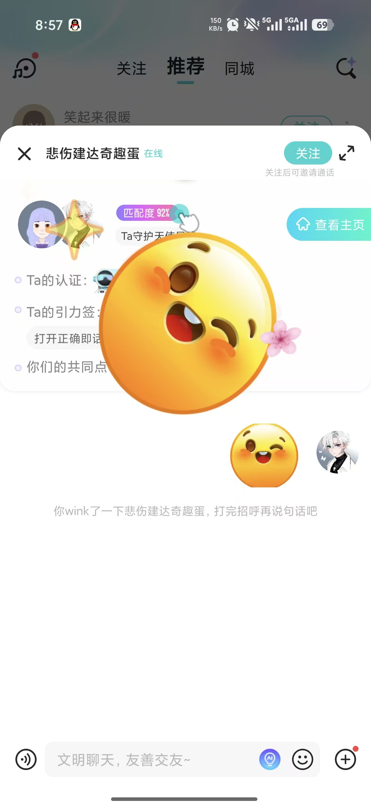

Your task is Restricted report review, permission tests and process facilitation. Planned allocation: 28 hours, including tests, review and reflection preparation. The task is assigned; it is not a completed contribution.
The supplied images under images/ are UI references. Your own captures belong beside your progress Markdown in code/thematic-friend/docs/progress/week2/images/. Qin Tian may send selected photos separately; you do not need an example ZIP. Code screenshots are optional for B–F, with no required filename or quota.
For a combined browser view of these instructions, open README.html.
Owner: Wu Zhuoda (E) · Reviewer: F Song Peitong · First feature target: 14 November 2026. Internal dates are estimates. Use the merged baseline on current main, or this dated source snapshot; confirm shared contracts before overlapping edits.
Run the project · Six test scenarios · Team map · Photo and evidence plan
Blocking, report submission and private report receipts exist. There is no staff role or report-review queue. The included code is A's AI-assisted baseline. Your contribution is the increment below.
First small change: Agree the role contract, create permission fixtures, and prove ordinary users cannot access the planned review route.
References 2/7 guide safety entry placement. The staff review page is a new design. This is a local course workflow, not a live moderation service.
All paths below are inside the included project.
Suggested new files (not implemented yet):
src/main/resources/templates/report-review.htmlImplement the six distinct behavior groups in TESTS.md. Include the first three relevant scenarios with your first feature PR; complete the six groups and independently reproduce two peer checks by 22 November. Reuse existing checks openly and identify your new assertions.
| Capture | What to show | Example filename |
|---|---|---|
| Normal result | Staff review queue and a saved valid status change | E_normal.png |
| Boundary/error | Ordinary-user rejection and reporter-only receipt visibility | E_boundary.png |
| Executable test result | Readable test names/results, command and source version | E_tests.png |
Use fictional data. Capture desktop and 390 px where a UI assertion requires it. Record expected/actual results and any remaining limitation in your own progress MD.
Submit your changed source and tests, real output, normal/boundary screenshots, a PR/check capture, an updated personal Trello card and E_progress.md. Follow SUBMIT.md for branch w2/e-safety, CAPTURE.md for actual terminal commands and FINISH_LINE.md for final acceptance. The baseline was merged in PR #8; create a new task branch from current main, or continue your existing task branch without overwriting work.
Qin Tian has two code screenshots for explaining A's work. B–F do not need code screenshots; submit source/test files and a brief explanation in Markdown. Each member uses their own task package and captures.
These are the user's supplied reference screenshots, not screenshots of the implemented project. Some show Soul branding. Use layout/interaction ideas with the project's warm-white/coral style, English default and temporary language switch. Keep initials/gradients; profile photos remain deferred.
Conversation header, context and text composer.
Compact profile summary and readable context above chat.

Use JDK 21 and a complete extracted source tree or Git checkout. The first Maven build needs network access. The website runs with Java, Thymeleaf, CSS and JavaScript together; Node.js is not needed to start it.
Open PowerShell in code/thematic-friend. In IntelliJ IDEA, Project Structure shows the selected JDK home (the folder containing bin/java.exe). If JAVA_HOME is not configured, set it for this terminal using your own installed JDK path. The path below is an example to replace:
$env:JAVA_HOME = 'D:\Tools\jdk-21'
Verify the selected Java version before building:
& "$env:JAVA_HOME\bin\java.exe" --version
$env:MAVEN_USER_HOME = Join-Path $PWD '.cache/maven'
$mavenRepo = Join-Path $env:MAVEN_USER_HOME 'repository'
.\mvnw.cmd --batch-mode --no-transfer-progress "-Dmaven.repo.local=$mavenRepo" package
Continue only when Maven exits 0. The package goal includes tests. Start the built application:
& "$env:JAVA_HOME\bin\java.exe" -jar .\target\thematic-friend-0.0.1-SNAPSHOT.jar
Keep the terminal open; Ctrl+C stops that application. A second process needs a different port and data directory. Stop the application before rebuilding its JAR on Windows. Default data is .local/data; use the same working directory to retain it. Each person's localhost address and H2 data are separate.
The included scripts/run-demo.ps1 prompts for a local fictional-account password. Existing demo accounts retain their initial password. Avoid including passwords in screenshots or commits. Use demo_zhou and demo_lin in separate sessions for matching/chat checks.
English is the default; the development switch is temporary. At final freeze, English-only operation is selected with TONGPIN_CHINESE_ENABLED=false and verified.
This ZIP's Java source is the merged 19-test baseline. A's later 31-test discovery increment and optional Playwright checks are on PR #9; use the canonical Git checkout after accepted changes reach main. Reusing A's smoke checks does not replace your new feature tests. See CAPTURE.md, baseline README and contracts.
Owner: Wu Zhuoda. Reviewer: F Song Peitong. All six groups start Not run. Implement these with your increment; the baseline's existing 19 Java tests are not your new work.
| ID | Scenario | Test level | Assertion | State |
|---|---|---|---|---|
| E-01 | Role gate | Integration | Staff can open report review; anonymous and ordinary members cannot access the page or underlying actions. | Not run |
| E-02 | Report confidentiality | Integration | A reporter sees their own receipt; another member cannot enumerate report details by changing IDs. | Not run |
| E-03 | Allowed status transition | Integration | Valid review actions persist the selected status and review metadata; invalid transitions are rejected. | Not run |
| E-04 | CSRF and validation | Parameterized integration | Missing CSRF, blank/overlong reason and malformed identifiers produce a controlled rejection. | Not run |
| E-05 | Block and end boundaries | Integration | Either-direction blocks/end decisions stop the relevant discovery and chat operations consistently. | Not run |
| E-06 | Accessible safety flow | Browser | Report/block controls are reachable from a small screen and keyboard; confirmation, cancellation and result feedback are clear. | Not run |
Use JUnit/Spring integration tests for server rules, browser automation for UI and isolated PowerShell/process tests for backup/restore. This ZIP retains the merged Maven baseline. A has an optional discovery browser runner on PR #9; reuse it as a regression after integration and add checks for your own feature. Agree and document any new browser/process test command with A/F. Parameterise useful boundaries; do not duplicate tests just to reach a count.
Deliver test source and fixtures with the feature, exact commands, exit code, version and readable output. Keep a real failing/retest pair when a defect occurs. Link the relevant screenshots from your own progress MD with relative paths.
First checkpoint: three relevant scenarios with the feature. By 22 Nov: all six groups and two independently run checks from the member whose work you review. During W4, retest changed areas and one cross-module flow. See your task.
Use CAPTURE.md for live output and SUBMIT.md for branch/PR steps. Submit executable source, not a picture of test code. Code screenshots are optional for B–F.
Keep the visible terminal/editor context and actual results. These instructions do not predeclare a passing result. Use fictional accounts and save your screenshots under code/thematic-friend/docs/progress/week2/images/. EVIDENCE.md describes process evidence.
After following RUN.md, run this in code/thematic-friend in PowerShell. Use your own JDK 21. If working in Git, commit the feature/tests before the final run or record any uncommitted changes explicitly.
$stamp = Get-Date -Format 'yyyyMMdd-HHmmss'
$evidenceDir = Join-Path $PWD ("docs/progress/week2/evidence/E-" + $stamp)
New-Item -ItemType Directory -Path $evidenceDir -Force | Out-Null
New-Item -ItemType Directory -Path 'docs/progress/week2/images' -Force | Out-Null
Get-Date -Format 'yyyy-MM-dd HH:mm:ss zzz'
& "$env:JAVA_HOME\bin\java.exe" --version
$env:MAVEN_USER_HOME = Join-Path $PWD '.cache/maven'
$mavenRepo = Join-Path $env:MAVEN_USER_HOME 'repository'
.\mvnw.cmd --batch-mode --no-transfer-progress "-Dmaven.repo.local=$mavenRepo" package 2>&1 | Tee-Object -FilePath (Join-Path $evidenceDir 'java-output.txt')
$javaExit = $LASTEXITCODE
"Java exit code: $javaExit" | Tee-Object -FilePath (Join-Path $evidenceDir 'java-exit.txt')
Read-Host 'Capture the real result with Win+Shift+S, then press Enter'
Keep Tests run, BUILD SUCCESS/FAILURE and the exit code visible. Save as E_java_terminal.png. A second capture of the command/source is useful if they do not fit. In a Git checkout, record git rev-parse HEAD and git status --short in the progress report; in this ZIP, identify the package manifest instead.
The untouched ZIP has 19 existing Java tests. New checks may change that number. A's 31-test screenshot is an example of A's run, not an expected result to copy. Preserve an actual failure and successful retest if a defect occurs.
Run the tests you add for your six scenario groups and record their exact command, dependency versions and exit code. B/D need browser or two-session coverage; C/E need negative permission cases; F needs disposable backup/restore process checks. Add runnable test code with the feature. Existing A discovery checks cover discovery only. Agree an optional browser-test setup with A/F and document it before asking someone else to run it.
Capture the normal result and a meaningful boundary/error result as E_normal.png and E_boundary.png. Add browser/process output when the Java suite does not exercise the assertion. Use the current behaviour, not staged success text.
After pushing, open your own PR in GitHub. Capture its branch, current revision and Checks state. If GitHub CLI is already installed and signed in, this optional command reads your PR:
$prNumber = [int](Read-Host 'Enter YOUR feature PR number')
gh pr view $prNumber --repo hansu650/thematic-friend-finder --json url,headRefName,headRefOid,state,isDraft
gh pr checks $prNumber --repo hansu650/thematic-friend-finder
$checksExit = $LASTEXITCODE
"Checks command exit code: $checksExit"
Read-Host 'Capture the actual status, then press Enter'
Use E_github_checks.png. Read the displayed status: pending/failed checks stay pending/failed. Do not substitute A's PR number. A screenshot of passing CI is not independent review.
Capture your own card when work starts and when you submit for review, with its actual status and PR link. Team weekly photos and a full-board capture are shared process evidence.
Qin Tian has two editor screenshots for A's explanation. B–F do not need code screenshots. Link your changed files and explain the important behaviour in your progress MD. Code and executable tests must still be committed. Use relative image links, for example , only after the real file exists in your progress directory.
Your branch is w2/e-safety. The Java baseline was merged in PR #8. The included ZIP is a dated starting snapshot; current main is the shared integration source. Keep the original W1 research branches as history.
In your chosen development folder, outside this extracted ZIP:
git clone https://github.com/hansu650/thematic-friend-finder.git
cd thematic-friend-finder
git switch main
git pull --ff-only origin main
git switch -c w2/e-safety
If the repository or your branch already exists, continue that checkout instead of cloning or creating the branch again. Run git status first and preserve uncommitted work. Do not replace an existing working tree with this ZIP. If you began from the ZIP, copy only your own changed source/test/evidence files into your branch after comparing with current main.
A's discovery PR #9 remains a separate reviewable increment until merged. After accepted work reaches main, use git fetch origin and merge origin/main into your own branch, resolving any conflicts with the affected owner. An example screenshot or package is not a request to merge unreviewed code.
Use the canonical code/thematic-friend directory. Stage your changed source/test files and your progress/evidence files explicitly. Inspect git diff --cached before committing. Exclude target, .cache, .local, node_modules, runtime databases and credentials. Then:
git commit -m "[W2][E] Describe the implemented change"
git push -u origin w2/e-safety
Open a PR to main in GitHub. Its description should state the previous behaviour, your actual change, test commands/results, relevant screenshots and any remaining limitation. Mark it Ready for review when implementation and necessary checks are complete. Reviewer: F Song Peitong; A coordinates integration.
Put screenshots in the images folder beside your progress MD and logs in its evidence folder. Preview the Markdown. Move Trello to Review when ready; move to Done after acceptance/merge. Each person writes their own reflection from actual work. See FINISH_LINE.md for the remaining team evaluation and submission work.
Each completed increment should have three useful captures: a normal result, one meaningful boundary/error result and the actual test-run summary. Record the test ID, source version, environment, command, expected/actual outcome and exit code. Source and executable tests are required in Git; editor screenshots are optional for B–F. Qin Tian retains two code screenshots for explaining A's work.
Save your progress Markdown under code/thematic-friend/docs/progress/week2/ and its images in the adjacent images/ folder. Use relative image paths such as ./images/B-02_interest-limit.png. Preserve real failures and retests; do not claim future tests as passed.
| Week | Meetings | Three useful team photos | Recorder | Individual evidence |
|---|---|---|---|---|
| W1 (2–8 Nov) | Kick-off plus UI/contract review | Team discussion, reference comparison, agreed task map | B Wang Yikai | Each: one source comparison and six test scenarios; do not backfill earlier events. |
| W2 (9–15 Nov) | Sprint Planning plus code/test checkpoint | Planning, pair implementation/testing, decision or defect discussion | C Tao Jiacheng | Each: first 3 relevant automated scenarios; 2 UI/result captures and 1 test-output capture. |
| W3 (16–22 Nov) | Integration check plus Review/Retrospective | Integration discussion, observed task test, review decisions | D Zhou Ziyue | Each: complete 6 relevant scenario groups; independently run 2 peer checks; keep real defect/retest pairs. |
| W4 (23–29 Nov) | Sprint Planning plus reproduction checkpoint | Prioritisation, restore/retest activity, freeze decision | F Song Peitong | Each: retest changed areas and one cross-module flow; F coordinates clean-copy reproduction. |
| W5 (30 Nov–6 Dec) | Rehearsal plus final Review/Retrospective | Rehearsal, evidence review, final decision discussion | E Wu Zhuoda | Each: final version/test summary and individual reflection; team demo stays within the course 15-minute limit. |
Aim for three useful team photos per week, not three per person. This is an evidence plan, not an assessment quota. Keep fewer if fewer useful moments occur. Use actual dates, actual attendees and consented participants; do not stage or backdate discussions.
Take a landscape view of the discussion and agenda, a closer view of real pair work/testing, then a review/decision view. Save a direct screenshot of the board or result as well, because photographed screens can be unreadable. Caption each with date, participants, activity, decision and next owner.
Save one full-board screenshot after the weekly progress update. The compact five-column board fits one view; preserve truthful task states. The team demo has a 15-minute course maximum.
Follow CAPTURE.md for real terminal results and your own PR/check identity. Also retain your personal Trello card when starting and submitting for review. Use SUBMIT.md to submit the actual source/test changes and evidence. The named package contains your complete task instructions; no example ZIP is needed. Selected photos sent by A illustrate the format, not your own contribution.
Updated 6 November 2026. Complete the agreed profile–discovery–mutual-match–chat–account–safety flow. Each member develops their own assigned increment and submits real evidence.
| Member | Work | Reviewer | Planned five-week hours |
|---|---|---|---|
| A Qin Tian | Baseline, discovery, contracts, integration, final acceptance and demonstration organisation | B Wang Yikai | 42 |
| B Wang Yikai | Live profile preview, interest counter, accessibility and usability observation | C Tao Jiacheng | 28 |
| C Tao Jiacheng | Password change, session policy and account contracts | D Zhou Ziyue | 28 |
| D Zhou Ziyue | Unread state, older-message history and conversation integration | E Wu Zhuoda | 28 |
| E Wu Zhuoda | Restricted report review, permission tests and process facilitation | F Song Peitong | 28 |
| F Song Peitong | Backup/restore, independent reproduction and runtime handover | A Qin Tian | 28 |
A has the largest individual scope and budget: 42 hours versus 28 for each teammate. A also owns shared contracts, PR integration, final cross-module testing and demonstration organisation. Module owners fix their own defects and explain their code. Estimates include testing, peer review, coordination and reflection; they are not a record of actual hours.
Start with an agreed 1–3 hour slice, then complete the six relevant scenario groups. The existing internal targets remain estimates pending member capacity: first increments during 9–15 Nov, integration/review through 22 Nov, feedback and reproduction during 23–29 Nov, and final demonstration/reflection preparation by 4 Dec with 5–6 Dec buffer. Confirm the official deadline through Moodle/the teacher.
Use Trello for actual status. Move to Review when code, tests and evidence are ready; Done needs acceptance and merge. B reviews A; C reviews B; D reviews C; E reviews D; F reviews E; A reviews F. Each review records what was actually rerun.
Read FINISH_LINE.md for the shared product checks and the distinction between feature completion and assessment completion.
Scope confirmed by Qin Tian on 6 November 2026: complete the friendship flow through profiles, discovery filters, mutual likes, conversations, account controls and safety. The supplied Momo/Soul images guide interaction and layout. The current round focuses on this coherent website; feed, location and photo-upload expansion are outside this agreed round.
When the six increments have been reviewed, integrated and tested together, the core product can be feature-complete for the agreed coursework scope. Completing a feature PR or collecting screenshots alone does not complete the assessment. User observation, improvements, reproducible handover, the team demonstration and six individual reflections follow.
The current source already has A's AI-assisted account/profile, discovery, mutual-match, basic chat and block/report baseline. A's first discovery refinement is implemented on w2/a-discovery and awaits independent review. B–F's increments below remain assigned work, not completed features.
| Owner | Assigned result | Completion evidence |
|---|---|---|
| A Qin Tian | Own and explain the baseline; refine discovery and match feedback; agree shared contracts; review and integrate all modules; lead final acceptance and demonstration organisation | Discovery regressions, real screenshots, contract decisions, reviewed PRs, integrated flow results and release/handover record |
| B Wang Yikai | Live unsaved profile preview, interest counter and accessible responsive interaction; coordinate usability observation | Preview/refresh and five-interest boundary tests, keyboard/390 px results, observed issues and one justified improvement |
| C Tao Jiacheng | Password change and explicit account/session contracts | Invalid requests leave credentials unchanged; old/new login behaviour, agreed session invalidation and persistence verified |
| D Zhou Ziyue | Per-participant unread state and bounded older-message loading | Two-session unread tests, history beyond 100 messages, ordering/duplicate checks and permission rejection |
| E Wu Zhuoda | Restricted report review and meaningful safety permissions; facilitate process reviews | Staff/ordinary/anonymous tests, private notes, valid status/handler/time and real process decisions |
| F Song Peitong | Stopped-database backup/restore and independent reproduction | Checksums, safe disposable restore, rejection of unsafe/corrupt/occupied targets and another person's clean-copy run |
A has the largest individual allocation: 42 planned hours, compared with 28 each for B–F. These include development, testing, review, coordination, demonstration and reflection preparation. They are capacity estimates, not claimed hours. A owns integration and fixes shared integration problems; each member remains responsible for their own implementation and tests.
Run these checks on one recorded integrated commit. Record expected and actual results, environment, tester and evidence links. A coordinates; the indicated member supplies their module's checks.
| ID | End-to-end behaviour | Owners | Current final-acceptance state |
|---|---|---|---|
| CORE-01 | Create fictional accounts, sign in, edit a profile and reload; unsaved preview stays local and saved values persist | A/B/C | Baseline exists; B/C increments and final retest pending |
| CORE-02 | Apply both filters; see genuine shared interests; clear a single condition; recover from empty results; hidden/self/blocked profiles are excluded | A/B | A's local increment passes; independent and integrated retest pending |
| CORE-03 | One-sided like cannot create chat; reciprocal/repeated decisions create one connection and open the correct match/conversation | A/D | A's local increment passes; final integrated retest pending |
| CORE-04 | Two sessions exchange persisted messages; unread state belongs to the recipient; older history loads without gaps or duplicates | D/C/A | Basic chat exists; unread/history pending |
| CORE-05 | Change password using the current credential; invalid/anonymous/CSRF requests are rejected; session policy is explicit and tested | C/A | Pending C's increment |
| CORE-06 | End/block contact, deny further access as specified, submit a private report and let authorised staff handle it; unrelated users cannot read it | E/D/C/A | Baseline actions exist; staff workflow and integration pending |
| CORE-07 | Use the core flow at desktop and 390 px with keyboard/buttons and reduced motion; validation, loading, empty and failure states remain understandable | B/A with module owners | A's selected flows pass; whole-product check pending |
| CORE-08 | Build from a clean source copy, restart using the same data, back up a stopped fixture database, restore to a fresh destination and verify known records | F/A | Baseline restart exists; backup/restore and independent run pending |
The final submitted interface is English. The temporary development language switch is removed or disabled and verified at the final freeze. If a physical phone is tested, record the real device; an emulated 390 px check remains labelled emulated.
The assessment's highest band is 86–100%. This is a target for the quality of the work and reasoning, not a checklist that guarantees 100. The assessment allocates 25% to the group demonstration and 75% to each individual's reflection.
| Assessment requirement | Evidence to prepare | Responsible people |
|---|---|---|
| A thoroughly designed, innovative working MVP and a detailed account of its lifecycle (p. 7) | Explain the user problem, alternatives and references, requirements, design choices, implementation, validation, iteration and handover. Justify Mingle's interest-based, mutual-choice flow with actual design decisions and feedback; do not claim copying a reference screen is innovation. | A leads; all owners explain their changes |
| Insightful evaluation of both product and project (p. 8) | Compare outcomes with objectives; analyse useful and weak choices, defects, scope changes, teamwork and tradeoffs. Link claims to real results and decisions, and explain what should change next. | Whole team, coordinated by A/E |
| Thorough, creative professional goals and action plans (p. 9) | Each person connects actual learning and evidence to their PDP and sets a specific next action, method and way to judge improvement. | Every member individually |
| Significant contribution, teamwork/leadership and critical reflection (p. 9) | Show a useful contribution to the shared outcome as well as the assigned module: peer testing, resolving an integration issue, helping a decision or improving a process. Analyse the effect, different perspectives and remaining weakness. | Every member individually |
The official reflection template asks about Your Project; Your Team; Your Project Management Approach; Ethical and Legal Considerations; Your Professional Development. Use real incidents and your own judgement in every section. For ethics/legal/sustainability, document what was researched, what design/data choices followed and what remains limited; a generic compliance sentence is insufficient. Keep sources and AI assistance explicit.
The video should cover requirements, design, the product in use, each person's responsibility, evaluation and continuation/handover. Production polish is not a separate marking category in the specification. Each member must include the shared MMUTube URL in their own reflection, and submit the reflection using the provided template.
Every member submits their source and executable tests, readable real test output, normal/boundary results, an actual PR/check status and an updated personal Trello card, plus a short progress record. Capture only enough images to explain the result; screenshot counts are not a grading quota.
Qin Tian has retained two editor screenshots to explain A's implementation and test. B–F are not required to submit code screenshots; a brief code explanation and links to their changed source/test files are sufficient. Each named package is self-contained for the member's task. A may send selected photos separately; members do not need an example ZIP.